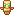

方块竞技场
♫
音效开
操作说明
林间水池
待开局
00:00
Ⅱ
第 1 局
已暂停
继续对战
重新开始
返回选图 / 选角
本局结束
0
淘汰
00:00
存活时间
再来一局
返回选图 / 选角
继续观战
生命
♥ ♥ ♥

空手
拾剑可近战
J
技能
Q
就绪
冲刺
␣
就绪
自动瞄准
E
WASD
移动
×
操作说明
WASD
/
↑↓←→
移动
持剑移动或转向
剑刃触敌，自动攻击一次
鼠标左 / 右键 ·
J
/
K
射击、投掷、饮用治疗药水或放置 TNT
Q
/
空格
角色技能 / 冲刺
E
切换自动瞄准和鼠标瞄准
Esc
/
R
暂停 / 重开
左手摇杆
推动走位，松手停下
右手道具键
射击、投掷、饮用或放置
技能 / 冲刺
移动时也能点击使用
自动瞄准
朝最近的敌人瞄准，剑刃触敌自动攻击
走近武器即可拾取或换装。每次只能持一件，用完消失。空手时需要先拾剑才能近战。
关闭